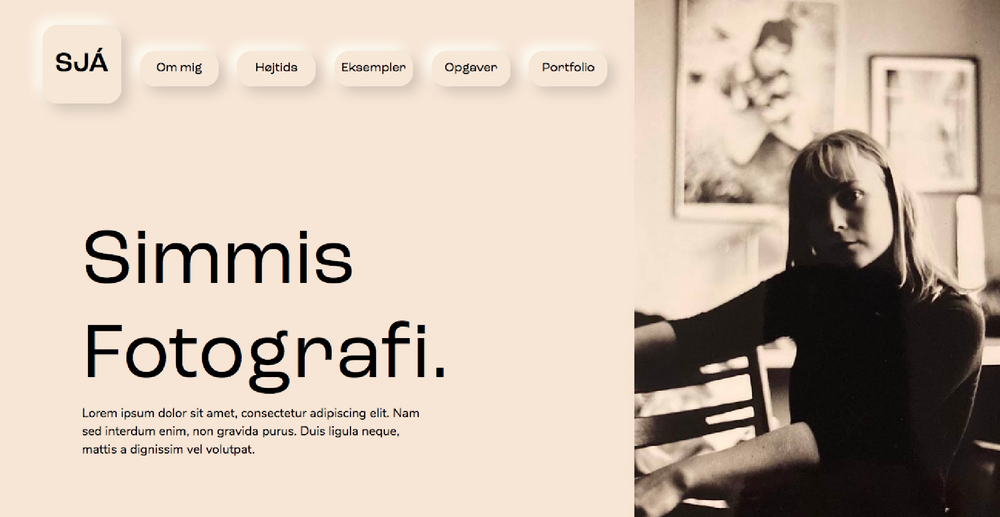
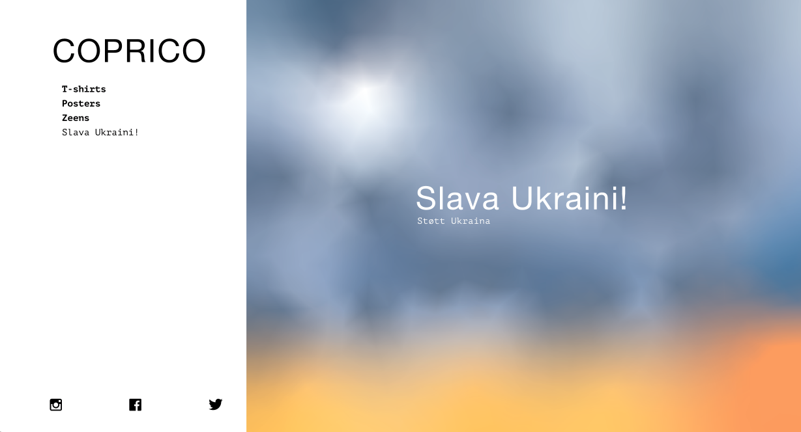
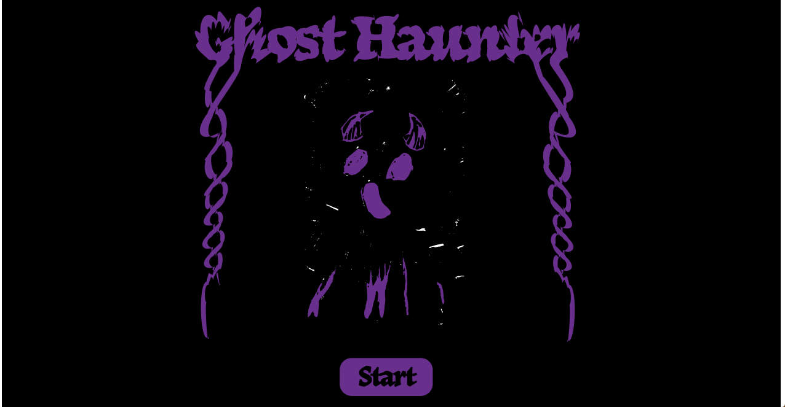
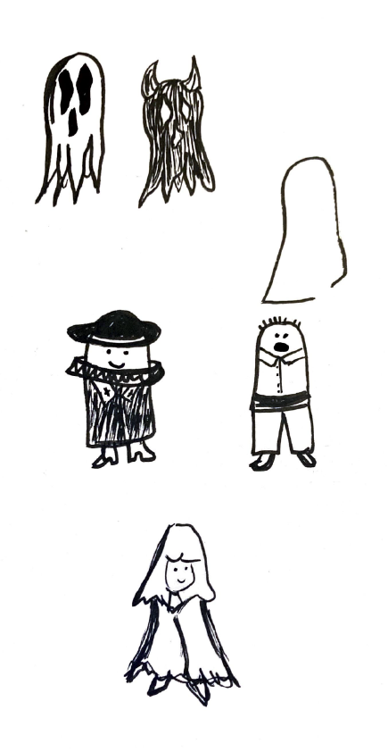
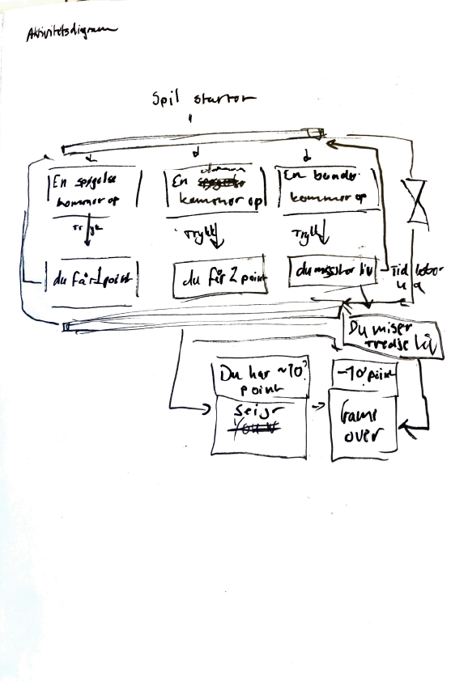
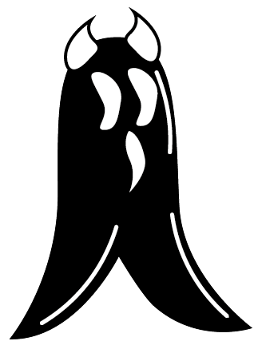
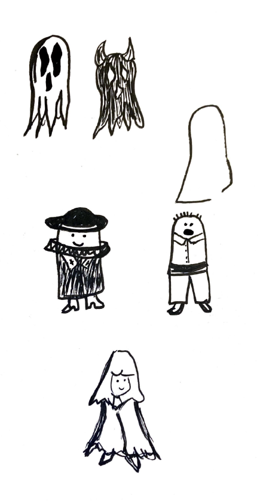
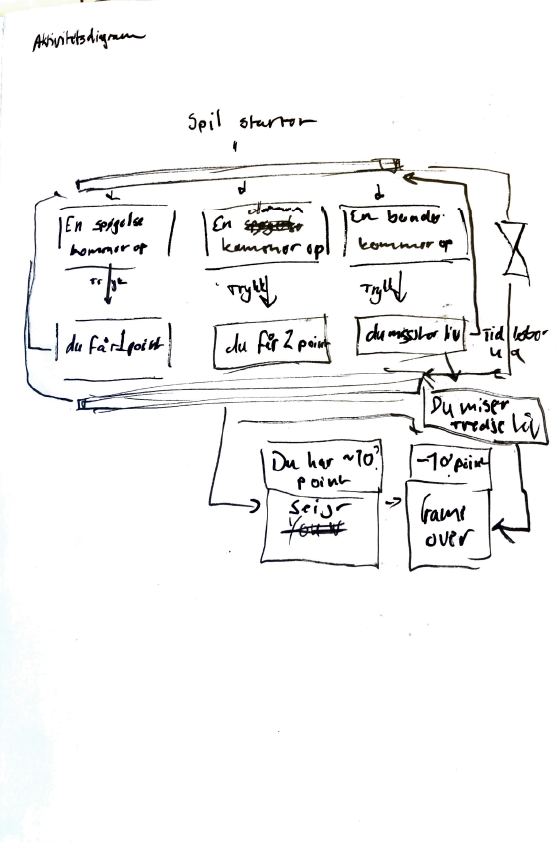
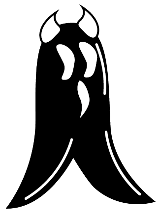
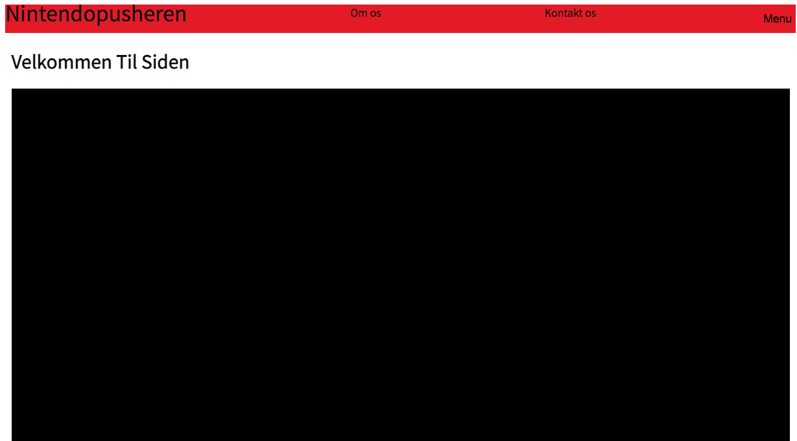

Tema 2 - Grundlæggende HTML
I tema 2 blev vi introduceret for de mest anvendte redskaber vi kommer til at bruge som multimediedesigner. Vi skulle code en responsive hjemmeside ved brug af HTML og CSS. Siden skulle være i en stil vi blev uddelt, stilen som jeg fik var neumorphism. Vi blev tildelt wireframes og et layoutdiagram vi skulle benytte os til siden. Sidens indhold måtte vi selv bestemme, jeg brugte min egen billeder og lavede en slags fotografi hjemmeside. Stilen jeg blev uddelt anvendte jeg til knapperne op i menuen på min sides header. Link til siden
Tema 3 - Grundlæggende UX
I tema 3 blev vi introduceret for udvikling af brugergrænseflader og samspillet mellem dem og brugere. Vi lavede desk research og vi skulle andvend det vi lærte til en xd prototype af en t-shirt webshop. Jeg valgte at gøre webshop til en print collective i København som lavede t-shirts og kunst prent. Jeg lavede desk research til at danne mig overblik over hvilken retning jeg skulle tage og lavede en survey om hvad er vigtigt for brugere at se i min prototype. Jeg lavede en kort case til virksomheden. Vi skulle lære at lave brugervenlige copy og microcopy. Vi lavede også design brainstorming øvelser. Til sidst testede vi prototypen og pitchede den. Link til XD prototype. Link til UX pitch deck.
Tema 4 - Animation
Grundlæggende animation handlede om at lave et spil fra grunden. Vi skulle anvendt javascript til at lave et interaktivt spil. Jeg designede mit eget spil, udgangspunktet var at man skulle spille som en spøgelses jagter og skyd ned spøgelser på en bondegård hvor der var spøgeri. Man skulle trykke på spøgelser eller dæmoner der gav ekstra point.Baggrunden var inspireret af min morfars gamle bondegård. Vi lærte også at lave animationer i css og at sætte lyd in på spilet. Link til spil
 





Tema 5 - Grundlæggende indhold
Grundlæggende indhold var et forløb hvor vi skulle arbejde i grupper. Vi skulle vælge en virksomhed og lave et redesign til deres hjemmeside. Først brugte vi fem sekunders test, tænk op højt test og bert test til at finde ud af hvad det var vi vil forbedre og redesigne. Vi lavede et scrum board til at opdele redesignen til mindre opgaver som vi tildelt så hver gruppemedelem. Vi lavede en sprint og tog igen de samme test til at finde ud af hvad ku ha været bedre og hvad vi skulle forbedre end nu mere. Link til redesign
